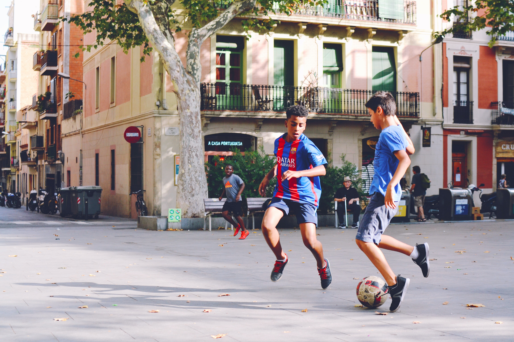

Try out on soccer to improve your health

Buy a ball and explore the benefit of playing soccer
It is clinically proven to release chemicals like endorphins, serotonin, and dopamine in the brain to help combat negative emotions. Frequently participating in physical activity releases these chemicals more often, therefore improving their mood day after day. Play soccer often can improve your well-being. Read to learn more.
About soccer View optionsEnjoy the benefits of playing soccer
